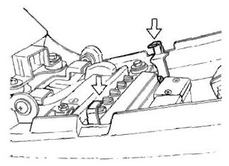
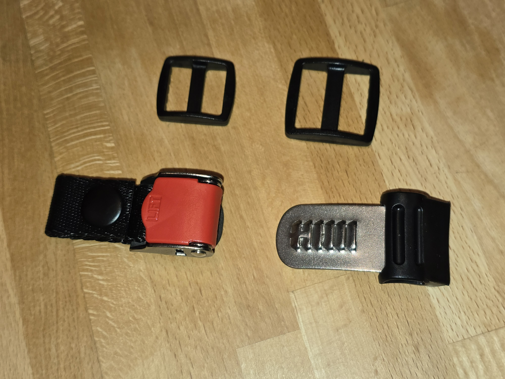
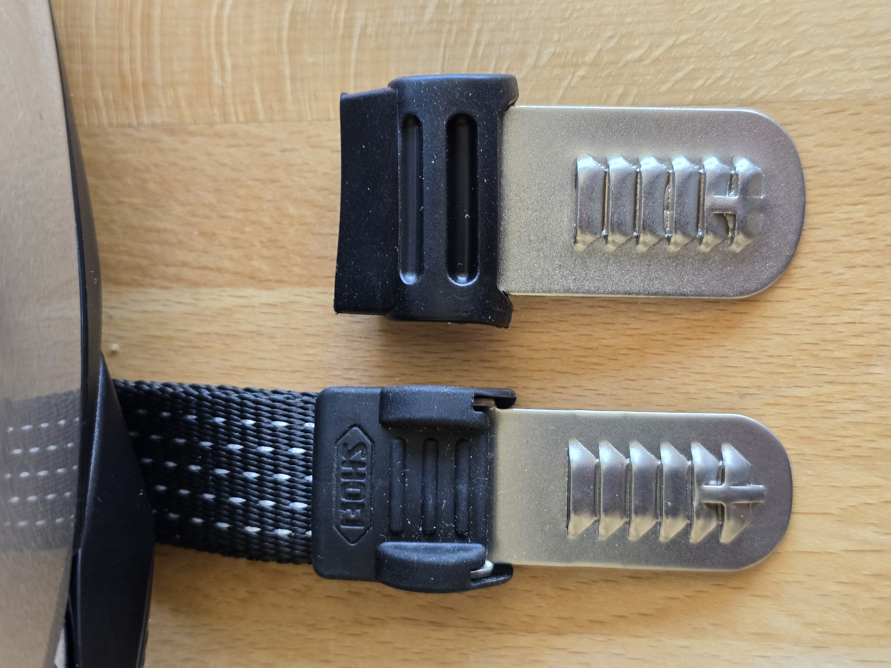
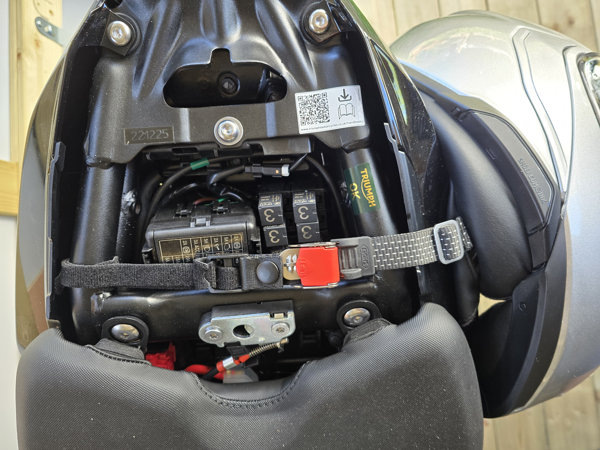
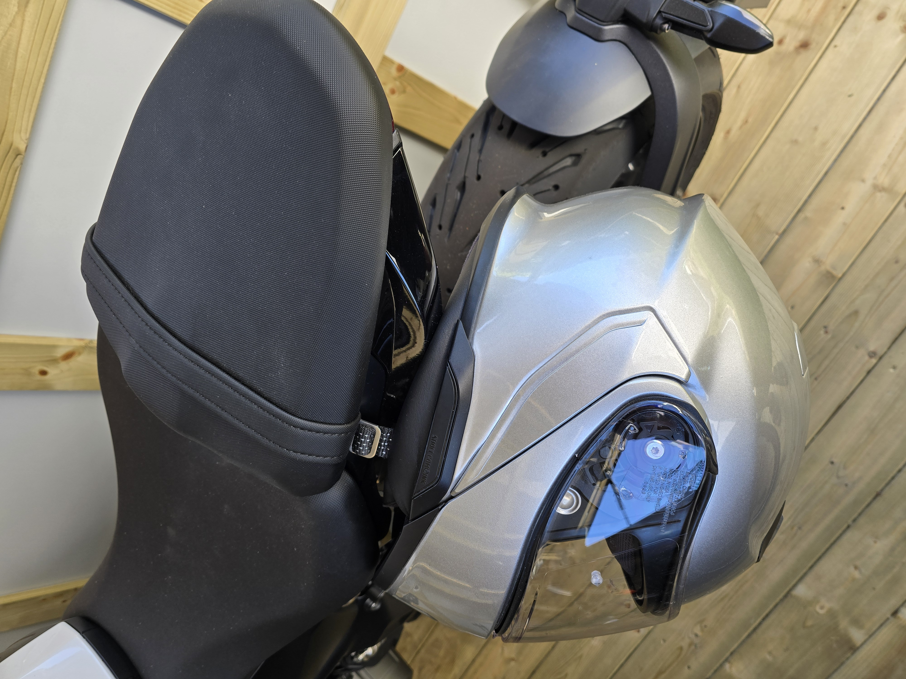
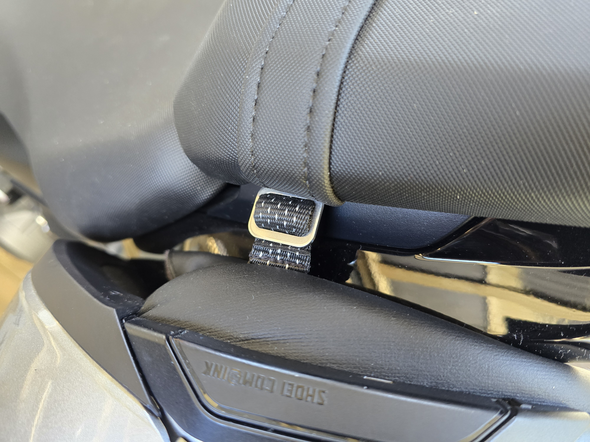
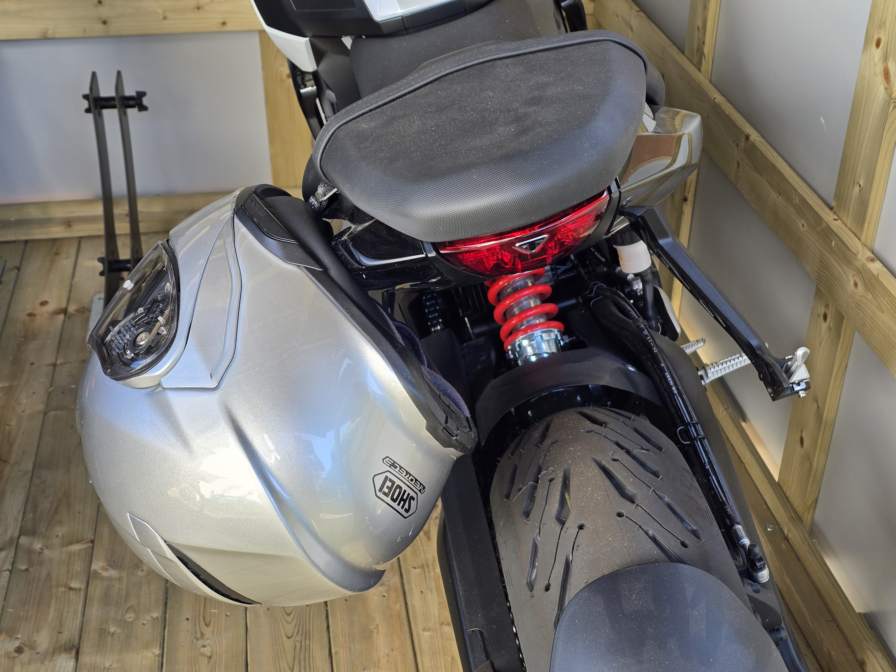
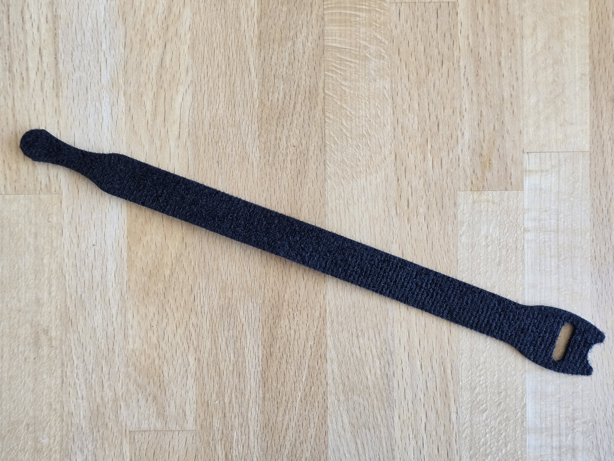

Motorcycle Helmet Hook 2026
My trusty old Motorcycle (1989 Suzuki GS500E) which I sadly had to bid farewell to last year (as it failed vehicle inspection) had a nifty feature for storing my helmet when parked.
Underneath the (lockable) seat there was a metal hook where a helmet's chin strap could be hanged. This image is from a different bike, but you get the idea:

Safe and secure, quick to store and retrieve.
Fast forward to 2026: I bought a new bike (2026 Triumph Trident 660) which unfortunately does not feature a similar contraption. It does have a detachable and lockable rear seat,
but there is no provision for storing or hooking up anything underneath. Also, my fairly new bike helmet (Shoei Neotec 3) has a new kind of ratcheted chin strap buckle (not the
classic double D-ring system) which is inconvenient for hanging it on a hook anyway.
So, when looking into options to solve that problem perhaps with an after-market attachment, I had the idea of permanently installing the exact same kind of ratcheting receptacle to
my bike to receive the metal strip connector of my helmet's chin strap. The original quick release buckle does not seem to be available as a spare part from Shoei. I guess that
makes sense, as this is a safety relevant part and they probably don't want to risk getting into liability issues when customers start messing with their helmet's chin strap.
But I found one vendor online that ships an aftermarket "Helmet Quick Release Buckle Kit" (meant to convert any helmet with a classic double D-ring system to this new type of
ratcheting fastener) which looked very similar to the one on the Shoei helmet. I took my chances and ordered one. This is what comes in the package:

The build quality appears very good and the overall look and feel is indeed very similar to the Shoei one, although the the metal strip is a bit wider. But since the ratcheting
profile seems to be almost identical, it will fit the metal strip of the Shoei helmet just fine. (The other way around, a wider strip in a narrower buckle, would most likely not work, as
there is very little side play for the metal strip).

To mount the buckle to the bike's frame underneath the back seat, I used velcro cable ties wrapped around the steel tubing of the bike frame,
but I guess there are a million other ways - be creative!

This is how it looks with the rear seat back in place. I'm happy with how it turned out.



The helmet can be pulled tightly against the side of the bike, so the opening is pretty much covered. I reckon it will even keep dry inside with a bit of rain.
Riding with a spare helmet attached to the bike like this will probably not be possible (it tilts too far inward so it might hit the wheel when the rear spring is fully deflected).
One other idea I had: use the remaining parts of the kit to provide a mounting option for additional helmets that still have the classic double D-ring style chin strap (don't replace
the D-rings, just add the metal strip to the loose end of the chin strap).
Component List
Ratcheted Buckle Kit
|
"Helmet Quick Release Buckle Kit Ratcheted Stainless Steel Helmet Chin Strap Adapter"
|
https://de.aliexpress.com/item/1005012157500564.html
|
Al**ss
|
CHF 13.68
|
Velcro cable tie
|
available in many shapes and sizes, I believe I got mine at Lidl
|

|
discounters or DIY stores
|
couple of pennies
|